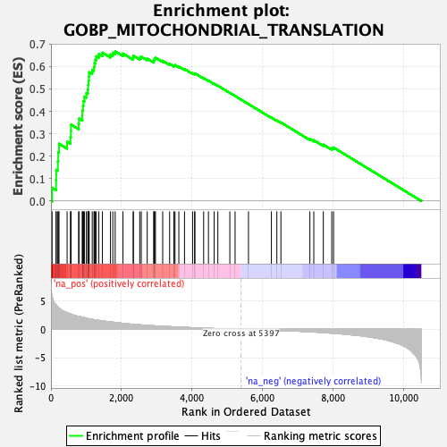
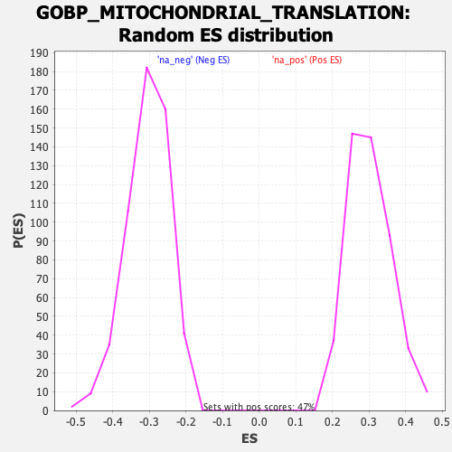

| Dataset | qlf.KOd4vsWTd4_gsea_score |
| Phenotype | NoPhenotypeAvailable |
| Upregulated in class | na_pos |
| GeneSet | GOBP_MITOCHONDRIAL_TRANSLATION |
| Enrichment Score (ES) | 0.66772884 |
| Normalized Enrichment Score (NES) | 2.2169514 |
| Nominal p-value | 0.0 |
| FDR q-value | 0.0 |
| FWER p-Value | 0.0 |

| SYMBOL | RANK IN GENE LIST | RANK METRIC SCORE | RUNNING ES | CORE ENRICHMENT | |
|---|---|---|---|---|---|
| 1 | C1QBP | 32 | 5.812 | 0.0588 | Yes |
| 2 | MRPS18B | 145 | 4.293 | 0.0937 | Yes |
| 3 | MRPS7 | 150 | 4.276 | 0.1389 | Yes |
| 4 | PTCD3 | 195 | 3.964 | 0.1768 | Yes |
| 5 | TUFM | 208 | 3.905 | 0.2172 | Yes |
| 6 | FASTKD3 | 229 | 3.759 | 0.2553 | Yes |
| 7 | SHMT2 | 458 | 2.928 | 0.2647 | Yes |
| 8 | MRPS28 | 553 | 2.748 | 0.2849 | Yes |
| 9 | MRPS15 | 568 | 2.693 | 0.3122 | Yes |
| 10 | MRPS34 | 570 | 2.690 | 0.3407 | Yes |
| 11 | MRPL47 | 785 | 2.273 | 0.3444 | Yes |
| 12 | MRPS17 | 795 | 2.264 | 0.3677 | Yes |
| 13 | TRMT10C | 891 | 2.133 | 0.3813 | Yes |
| 14 | MRPS18A | 892 | 2.133 | 0.4040 | Yes |
| 15 | UQCC2 | 908 | 2.118 | 0.4251 | Yes |
| 16 | MRPL2 | 924 | 2.102 | 0.4460 | Yes |
| 17 | LRPPRC | 949 | 2.066 | 0.4657 | Yes |
| 18 | TARS2 | 1004 | 1.981 | 0.4816 | Yes |
| 19 | TSFM | 1046 | 1.917 | 0.4981 | Yes |
| 20 | NOA1 | 1056 | 1.896 | 0.5174 | Yes |
| 21 | MTG1 | 1065 | 1.876 | 0.5366 | Yes |
| 22 | FASTKD2 | 1077 | 1.863 | 0.5554 | Yes |
| 23 | GATC | 1085 | 1.852 | 0.5744 | Yes |
| 24 | MRPS27 | 1171 | 1.755 | 0.5849 | Yes |
| 25 | MRPL51 | 1220 | 1.711 | 0.5986 | Yes |
| 26 | MRPS2 | 1237 | 1.691 | 0.6150 | Yes |
| 27 | RARS2 | 1255 | 1.673 | 0.6312 | Yes |
| 28 | EARS2 | 1287 | 1.640 | 0.6457 | Yes |
| 29 | COA3 | 1359 | 1.575 | 0.6556 | Yes |
| 30 | MRPL16 | 1460 | 1.489 | 0.6619 | Yes |
| 31 | MRPS14 | 1689 | 1.309 | 0.6540 | Yes |
| 32 | GFM1 | 1755 | 1.262 | 0.6612 | Yes |
| 33 | MRPS24 | 1822 | 1.206 | 0.6677 | Yes |
| 34 | MTG2 | 2043 | 1.047 | 0.6578 | No |
| 35 | GATB | 2334 | 0.880 | 0.6394 | No |
| 36 | MRPL23 | 2338 | 0.877 | 0.6484 | No |
| 37 | MTIF2 | 2519 | 0.792 | 0.6396 | No |
| 38 | MRPS12 | 2563 | 0.770 | 0.6437 | No |
| 39 | YARS2 | 2731 | 0.701 | 0.6352 | No |
| 40 | LARS2 | 2914 | 0.623 | 0.6244 | No |
| 41 | IARS2 | 2928 | 0.619 | 0.6297 | No |
| 42 | NDUFA7 | 2942 | 0.615 | 0.6350 | No |
| 43 | MRPS16 | 2965 | 0.607 | 0.6394 | No |
| 44 | MALSU1 | 3170 | 0.536 | 0.6255 | No |
| 45 | TRUB2 | 3367 | 0.470 | 0.6118 | No |
| 46 | MRPL44 | 3488 | 0.433 | 0.6049 | No |
| 47 | NGRN | 3520 | 0.422 | 0.6064 | No |
| 48 | ALKBH1 | 3628 | 0.388 | 0.6003 | No |
| 49 | MTRF1 | 3789 | 0.345 | 0.5886 | No |
| 50 | GFM2 | 4018 | 0.283 | 0.5698 | No |
| 51 | DARS2 | 4076 | 0.270 | 0.5672 | No |
| 52 | MRPS21 | 4084 | 0.268 | 0.5694 | No |
| 53 | MRPS11 | 4332 | 0.211 | 0.5480 | No |
| 54 | TACO1 | 4468 | 0.176 | 0.5370 | No |
| 55 | RPUSD4 | 4631 | 0.139 | 0.5229 | No |
| 56 | MPV17L2 | 4735 | 0.117 | 0.5143 | No |
| 57 | AARS2 | 5075 | 0.056 | 0.4824 | No |
| 58 | MTRF1L | 5224 | 0.032 | 0.4686 | No |
| 59 | MRPL57 | 5604 | -0.033 | 0.4326 | No |
| 60 | SARS2 | 6254 | -0.146 | 0.3721 | No |
| 61 | QRSL1 | 6409 | -0.182 | 0.3592 | No |
| 62 | CDK5RAP1 | 6524 | -0.205 | 0.3505 | No |
| 63 | NSUN3 | 7346 | -0.434 | 0.2765 | No |
| 64 | MTIF3 | 7457 | -0.474 | 0.2710 | No |
| 65 | MRPS6 | 7727 | -0.581 | 0.2514 | No |
| 66 | RPUSD3 | 7967 | -0.681 | 0.2358 | No |
| 67 | WARS2 | 8018 | -0.701 | 0.2385 | No |
